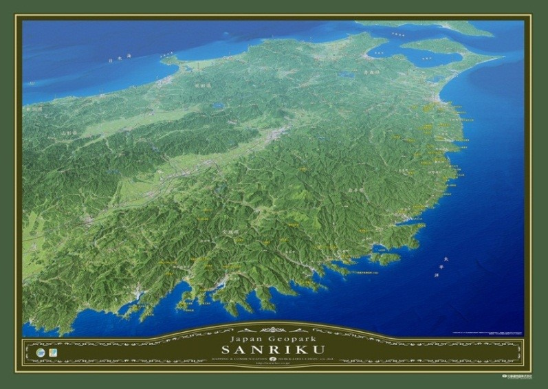
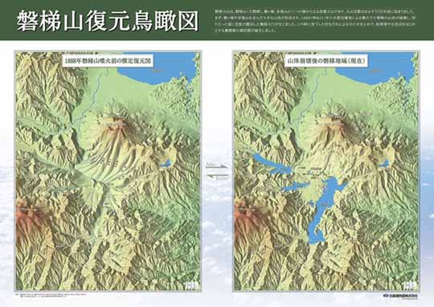
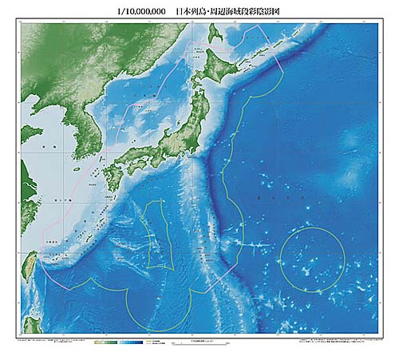
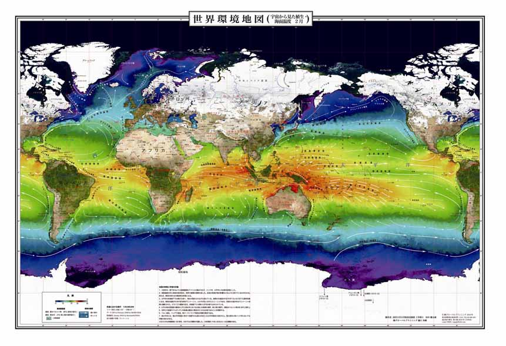
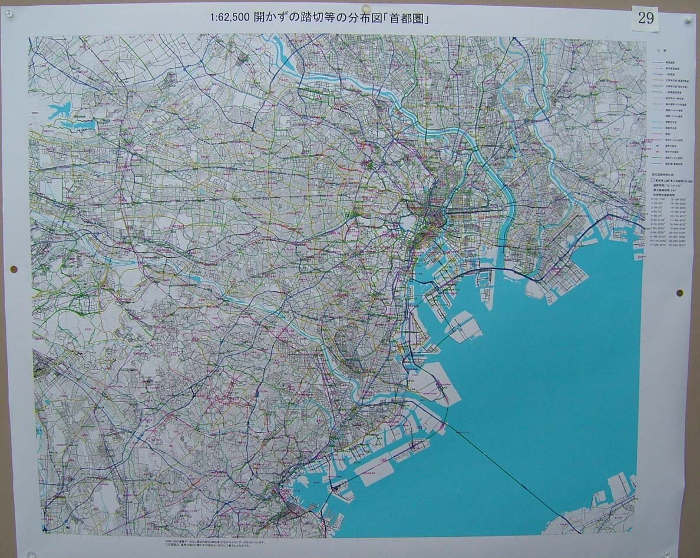
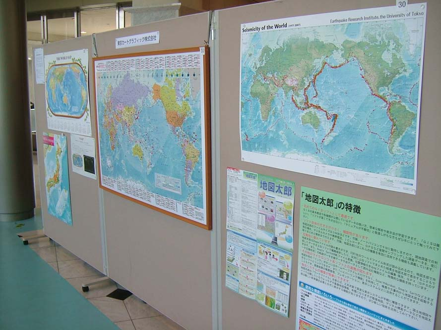
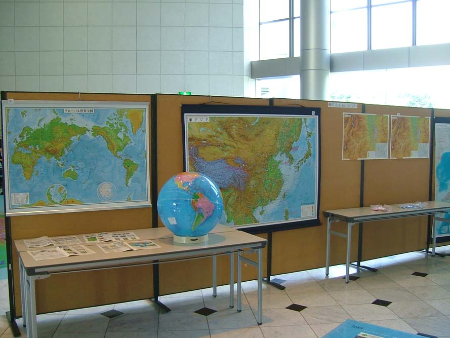
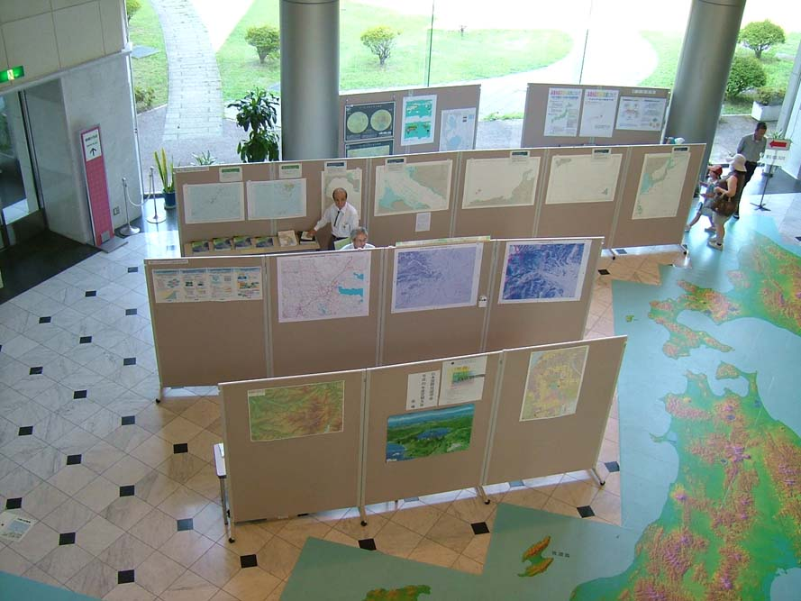
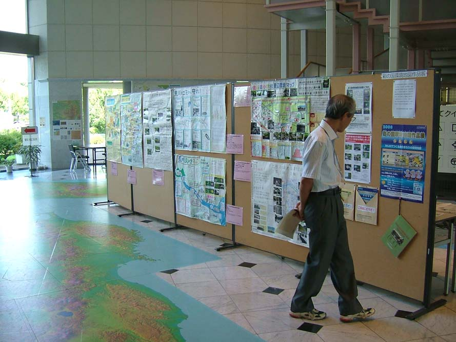

|
「地図展優秀地図」とは？ 日本地図学会定期大会では、毎年「地図・図書展」が開催されており、各機関・企業の優れた地図・図書が多数展示、販売されています。本学会において、「定期大会地図・図書展に出展された地図の中で優秀地図を選定・表彰し地図展への出展について関心を高め、また、質の高い優秀地図をICAの国際地図展に出展すること」が議論され、例年実施されている地図・図書展示が、優秀地図の発掘、ならびに日本の地図作製技術向上の一助になることを願い、平成20年度定期大会より「優秀地図表彰のための投票」を実施しています。 投票は、定期大会に参加された会員により、地図・図書展示会場において、「地図作製の企画及び作製技術の面で優れている」と認められる地図を３点選定する形で行われています（試作品を含む紙地図を対象）。 投票の結果、３点を優秀賞として表彰しており、このサイトでは、惜しくも僅差で受賞をのがした作品２点も掲載しました。 なお、「地図展優秀地図選定」の運営は、マップセンター委員会（第26期委員長 山本国雄）が中心となって実施しています。出展希望の機関・企業を広く受け付けております。定期大会地図・図書展示に関するお問い合せは、学会事務局までお願いいたします。 |
第７回（平成26年度）
出展機関：
画像提供 株式会社東京地図研究社 無断転載禁止
出展機関：
出展機関：

画像提供 朝日航洋株式会社 無断転載禁止
制作：
出展機関：

画像提供 北海道地図株式会社 無断転載禁止
制作：
出展機関：

画像提供 北海道地図株式会社 無断転載禁止
制作：
出展機関：
東京カートグラフィック株式会社 サイト
http://www.tcgmap.jp/product/carto/voyage/pentaglobe/index.html
| １．朝日航洋(株) ２．海上保安庁海洋情報部 ３．(株)グローバルプランニング |
| ４．国土地図(株) ５．国土地理院 ６．(株)古今書院 |
| ７．（株）ゼンリン ８．地図工房トンビの目 ９．(一財)地図情報センター |
| 10．東京カートグラフィック(株) 11．(株)東京地図研究社 12．(一財)日本水路協会 |
| 13．(一財)日本地図センター 14．北海道地図(株) |
第６回（平成25年度）
出展機関：
画像提供 株式会社グローバルプランニング 無断転載禁止
出展機関：
表面 裏面
画像提供 北海道地図 株式会社 無断転載禁止
出展機関：

画像提供 北海道地図 株式会社 無断転載禁止
織田雅己
出展機関：

画像提供 地図工房トンビの目 無断転載禁止
制作：
出展機関：
国土交通省 国土地理院 サイト
制作：
出展機関：

画像提供 北海道地図株式会社 無断転載禁止
制作：
出展機関：

画像提供 北海道地図株式会社 無断転載禁止
制作：
出展機関：
東京カートグラフィック株式会社 サイト
http://www.tcgmap.jp/product/goods/
画像提供 東京カートグラフィック株式会社 無断転載禁止
| １．地図工房トンビの目 ２．北海道地図(株) ３．(株)古今書院 |
| ４．(株)グローバルプランニング ５．(株)ゼンリン ６．東京カートグラフィック(株) |
| ７．海上保安庁 海洋情報部 ８．国土交通省 国土地理院 ９．(一財)日本水路協会 |
| 10．(一財)地図情報センター |
第５回（平成24年度）
出展機関：
出展機関：

画像提供 海上保安庁海洋情報部 無断転載禁止
出展機関：
画像提供 北海道地図 株式会社 無断転載禁止
制作：
出展機関：
画像提供 株式会社武揚堂 無断転載禁止
制作：
出展機関：
国土地図株式会社 サイト
http://www.kokudochizu.co.jp/index.php/jigyoannai-q/chizujyohogijyutubu-q/dansai-inei-q.html

画像提供 国土地図株式会社 無断転載禁止
制作：
出展機関：
北海道地図株式会社 サイト
| １．(株)古今書院 ２．地図工房トンビの目 ３．北海道地図(株) |
| ４．東京カートグラフィック(株) ５．(株)ゼンリン ６．埼玉県立文書館 |
| ７．(一財)地図情報センター ８．(財)日本地図センター ９．(一財)日本水路協会 |
| 10．海上保安庁 海洋情報部 11．国土交通省 国土地理院 |
| 12．国土地図(株) 13．(株)武揚堂 14．(株) 之 潮 |
第４回（平成23年度）
出展機関：
画像提供 海上保安庁海洋情報部
無断転載禁止
アナグリフ画像は、海上保安庁と広島大学などが共同研究として実施している
平成23−26年度科学研究費補助金（基盤研究（A）研究代表者：中田 高）の
研究成果の一部である。
出展機関：
出展機関：
株式会社ジェオ 鳥瞰図 サイト
制作：
織田雅己
出展機関：
画像提供 地図工房トンビの目（織田雅己） 無断転載禁止
制作：
出展機関：
株式会社昭文社 日本海洋地図 サイト
| １．(株)グロ−バルプランニング ２．京極堂 ３．(株)古今書院 |
| ４．東京カートグラフィック(株) ５．(株)パスコ ６．地図工房トンビの目 |
| ７．(社)日本地図調製業協会 ８．(財)日本地図センター ９．(財)日本デジタル道路地図協会 |
| 10．(財)地図情報センター 11．(財)日本水路協会 12．埼玉県立文書館 |
| 13．海上保安庁 海洋情報部 14．国土交通省 国土地理院 15．株式会社之潮 |
第３回（平成22年度）
出展機関：
国土交通省国土地理院 ５万分１集成図「奈良」 サイト
http://www.gsi.go.jp/chizuhensyu/chizuhensyu41001.html
出展機関：
 
画像提供 株式会社グローバルプランニング 無断転載禁止
織田 雅己
出展機関：
地図工房 トンビの目
地図工房 トンビの目 サイト
制作：
出展機関：
画像提供 株式会社武揚堂 無断転載禁止
制作：
出展機関：
画像提供 東京カートグラフィック株式会社 無断転載禁止
出展機関：
画像提供 国土交通省国土地理院 無断転載禁止
| １．国土交通省 国土地理院 ２．海上保安庁 海洋情報部 ３．(財)日本水路協会 |
| ４．(財)地図情報センター ５．(財)日本地図センター ６．(社)日本地図調製業協会 |
| ７．(株)古今書院 ８．東京カートグラフィック(株) ９．(株)グロ−バルプランニング |
| 10．(株) 之 潮 11．(株) 昭 文 社 12．GIS NEXT（(株)ネクストパブリッシング） |
第２回（平成21年度）
出展機関：
財団法人 日本水路協会 「海・陸情報図」 サイト
出展機関：
画像提供 国土交通省国土地理院 無断転載禁止
出展機関：
国土交通省国土地理院 地球地図 サイト
http://www1.gsi.go.jp/geowww/globalmap-gsi/globalmap-gsi.html
出展機関：
国土交通省国土地理院内 「航空レーザー測量」サイト
出展機関：
(株)グローバルプランニング カタログより転載 無断転載禁止
| １．海上保安庁 海洋情報部 ２．（株）グローバルプランニング ３．国土交通省 国土地理院 |
| ４．(株)古今書院 ５．(株)之潮 ６．（社）日本地図調製業協会 |
| ７．（財）日本水路協会 ８．東京カートグラフィック(株) ９．ＧＩＳ ＮＥＸＴ（(株)ネクストパブリッシング） |
| 10．(財）日本地図センター 11．(財）地図情報センター 12．(株)帝国書院 |
| 13．（財）日本デジタル道路地図協会 14．(株)昭文社 15．紙久図や 京極堂 |
第１回（平成20年度）
出展機関：

出展機関：
財団法人 日本水路協会 「海・陸情報図」サイト
出展機関：
国土交通省国土地理院内 「月の地形図」サイト
出展機関：
国土交通省国土地理院内 「1:25,000デジタル標高地形図（高知）」サイト
http://www1.gsi.go.jp/geowww/Laser_HP/digital_image.html#kochi
出展機関：
東京カートグラフィック株式会社内 「平成20年度カレンダー（光る地図）」サイト
| １．国土地理院 ２．海上保安庁 海洋情報部 ３．（財）日本水路協会 |
| ４．(財）日本地図センター ５．（財）日本デジタル道路地図協会 ６．（株）グローバルプランニング |
| ７．内外地図（株） ８．(株)昭文社 ９．(財）地図情報センター |
| 10．彩の国環境地図作品展 11．（社）日本地図調製業協会 |
| 12．帝国書院 13．東京カートグラフィック(株) 14．シービーエス(株) |
| 15．(株)古今書院 16．不二出版 17．(株)之潮 |
|  |  |
|  |  |